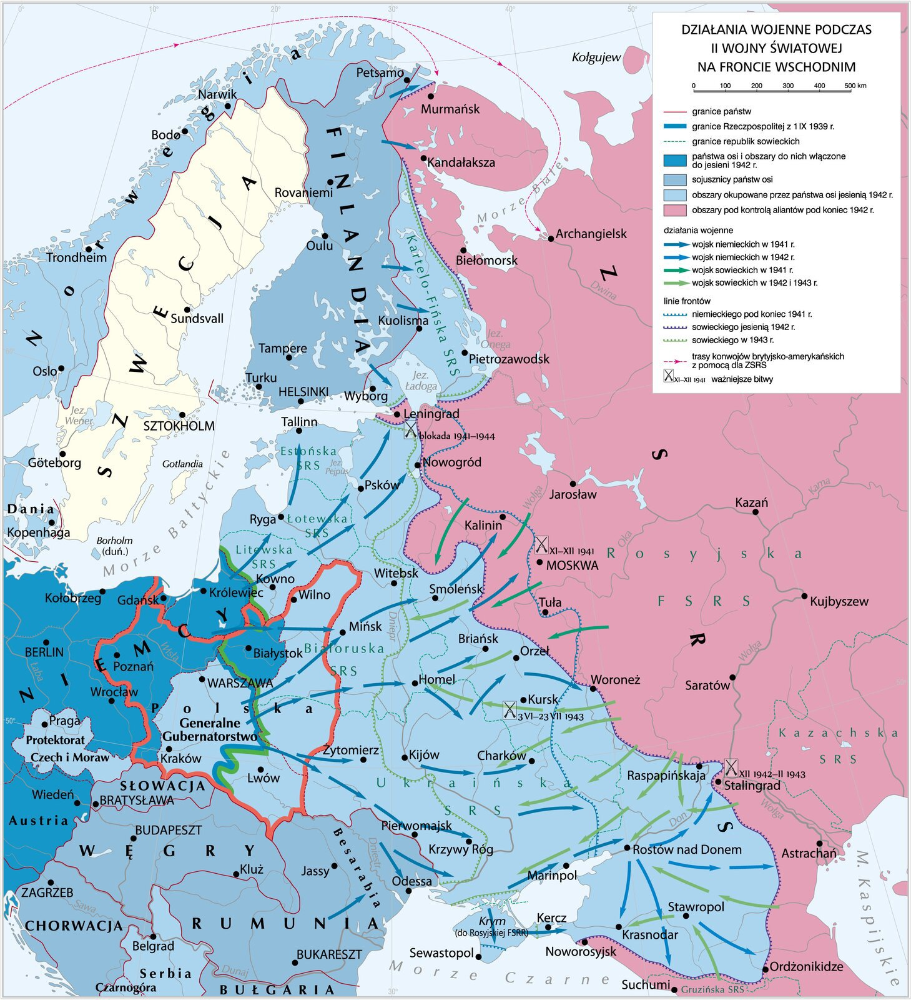
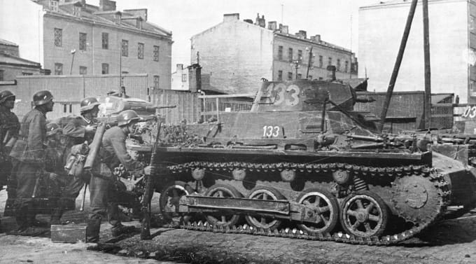

W pierwszym dniu wojny, 22 czerwca 1941, samoloty Luftwaffe przypuściły zmasowane naloty na radzieckie lotniska znajdujące się przy granicy niemiecko-radzieckiej. Nad 66 lotnisk wybranych jako priorytetowe cele do zniszczenia wysłano 637 bombowców i 231 myśliwców. Straty Radzieckich Sił Powietrznych w pierwszym dniu niemieckiej inwazji wyniosły ok. 2000 samolotów zniszczonych na ziemi, w powietrzu, uszkodzonych i porzuconych bądź zniszczonych przez własne załogi w czasie odwrotu. W wyniku walk z radzieckimi samolotami, które zdążyły wystartować i ognia artylerii przeciwlotniczej, która zdołała otworzyć ogień do nieprzyjacielskich samolotów Luftwaffe straciła 61 samolotów, zaś lotnictwo rumuńskie 11 samolotów.

Dowódcą Grupy Armii „Północ” był feldmarszałek Wilhelm von Leeb. W jej skład wchodziły 16. Armia gen. płka Ernsta Buscha, 18. Armia gen. płk. Georga von Küchlera i 4. Grupa Pancerna gen. płka Ericha Höpnera. Zadaniem 16. Armii i 4. Grupy Pancernej było rozbicie wojsk radzieckich w rejonie Kowna i opanowanie północnego brzegu rzeki Dźwiny. 18. Armia otrzymała zadanie nacierania w kierunku Rygi, aby po rozbiciu jednostek radzieckich skierować się na Psków. Zadaniem 291. Dywizji Piechoty należącej do 18. Armii był marsz wzdłuż wybrzeża Bałtyku i zajęcie Archipelagu Moonsundzkiego. Natarcie niemieckie odpierały oddziały 8. i 11. Armii z Frontu Północno-Zachodniego.
